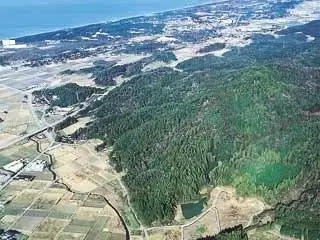

Japan / Ishikawa / Hodatsushimizu
Hodatsushimizu, Ishikawa: things to do, food and stays
Hodatsushimizu · Ishikawa
Hodatsushimizu
Highlighted on the Ishikawa map.

Japan / Ishikawa / Hodatsushimizu
Hodatsushimizu · Ishikawa
Hodatsushimizu
Highlighted on the Ishikawa map.
